Dr. Giácomo Trojan · Otomodelação e Lip Lift
Os anúncios ativos de 17 especialistas em otomodelação e lip lift, os perfis do Instagram e os sites que valem acompanhar, e os primeiros conteúdos que propomos para o Dr. Giácomo. Marque 👍 no que você gostou e 👎 no que não gostou.
Lemos 466 anúncios, entre os 480 que estas páginas mantêm ativos hoje. Três números resumem como esse mercado anuncia:
São a prova mais forte de que o formato funciona.
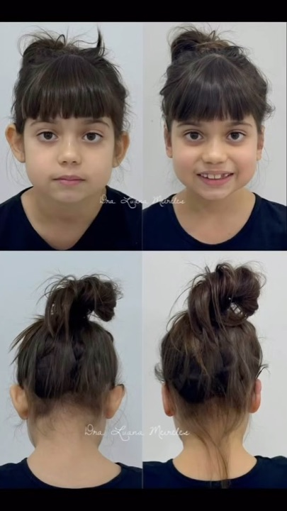
573 dias Dra. Luana Meireles · Vídeo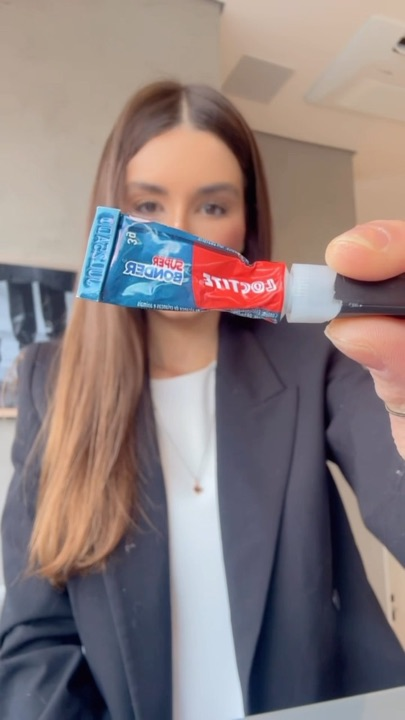
567 dias Dra. Luana Meireles · Vídeo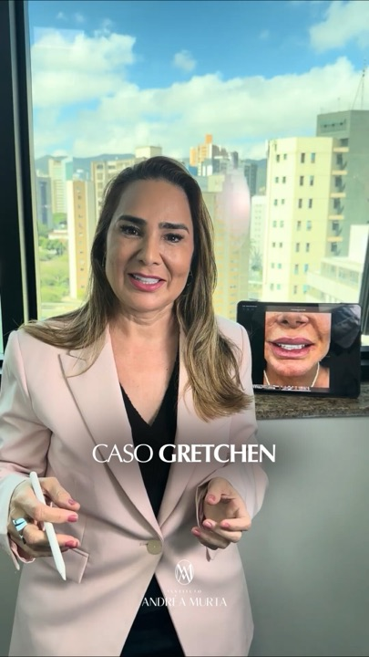
520 dias Instituto Andréa Murta · Vídeo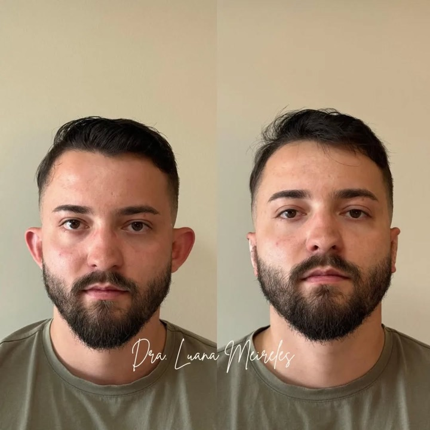
491 dias Dra. Luana Meireles · Imagem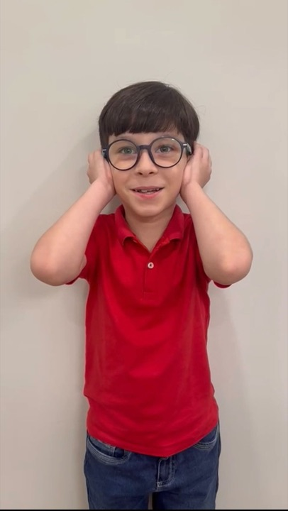
464 dias Dra. Grazielle Jirousek · Vídeo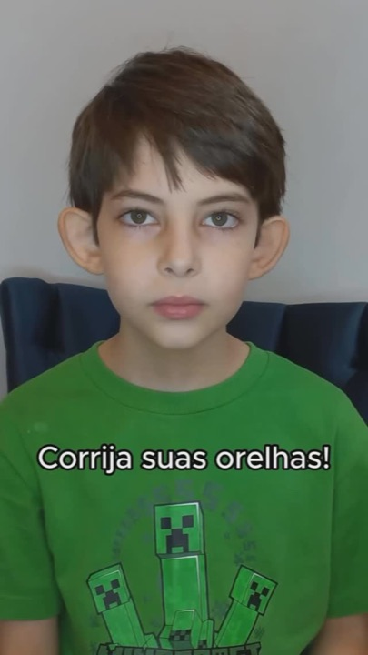
461 dias Dra. Grazielle Jirousek · VídeoNa orelha, a frase que mais se repete é a da mulher que não prende o cabelo, não faz rabo de cavalo e foge de foto de lado. É a mesma dor que a Camila contou.
Luana Meireles, Nathália Salum, Ely Éleres, Francisca FabyanaMetade dos anúncios de orelha mostra criança (6 a 12 anos) e fala com os pais: bullying, escola, “ver o sorriso do filho”. Os que estão há mais tempo no ar são de criança.
Grazielle Jirousek (464 dias), Luana Meireles, Tarlei Fonseca, Francisca FabyanaToda copy de orelha traz a mesma trinca: sem corte, anestesia local, 40 a 90 minutos e volta à rotina. A objeção que ela derruba é “é cirurgia?”.
Uedli Aguiar, Rubens Marinelli, Nathália Salum, Ely ÉleresO vídeo que mais se repete na orelha é a pessoa se vendo pela primeira vez, rindo ou chorando. Não precisa de roteiro.
Rubens Marinelli, Ely Éleres, Tarlei FonsecaNo lábio, o argumento central é a diferença: o preenchimento dá volume, o lip lift muda a altura do lábio. Muitas falam com quem já fez preenchimento e não gostou.
Sarah Araujo, Karla Lira, Andréa Murta, Danilo MagalhãesQuem anuncia lip lift mostra a marcação com caneta, os pontos e a cicatrização semana a semana. A transparência responde a maior objeção, a cicatriz.
Sarah Araujo, Vivianni Gil, Fran SouzaQuase todo mundo dá nome ao seu jeito de fazer: Remodele, OTO4K, New Ear, CCP, Fragilize, Lip Lift Modificado. O Dr. Giácomo já faz isso com o Método Papada 3D.
Luana Meireles, Uedli Aguiar, Grazielle Jirousek, Tarlei Fonseca, Fran SouzaParte
10 especialistas. Quase todos são cirurgiões-dentistas, a mesma regra do CFO que vale para o Dr. Giácomo.
01
Cirurgião-dentista em Belo Horizonte (CRO-MG). Criou a técnica de otomodelação usada por boa parte dos dentistas do país (209 mil seguidores).
Biblioteca de anúncios ↗ @drkleytonvalverde ↗
02
Cirurgiã-dentista em Americana e São Bernardo do Campo/SP (CROSP 111542). Método próprio “Remodele” e 242 mil seguidores.
Biblioteca de anúncios ↗ @draluanameireles ↗
Aqui vai o relato da nossa princesa Alice de como foi a harmonização de orelhas! 👂🏼😍 Um pouco sobre o procedimento: • É realizado em consultório, 20 a 30 minutos cada…
Botão: Agendar ver anúncio ↗
Usar Super Bonder ou penteados para esconder orelhas de abano? Nunca mais! ❌ Conheça a Otomodelação, o método definitivo para corrigir orelhas de forma rápida, segura e…
Botão: Agendar ver anúncio ↗
Harmonização de orelhas - Otomodelação Remodele👂♥️ Minha técnica tem resultado IMEDIATO e DEFINITIVO, é realizada em consultório, com duração de 20 a 30 min cada orelha.…
Botão: Agendar ver anúncio ↗
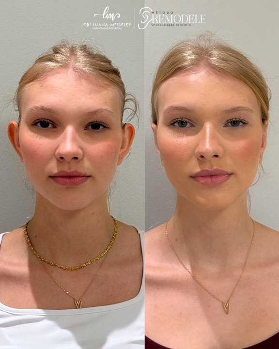
👂✨ ORELHA DE ABANO? CORREÇÃO SEM CIRURGIA DEFINITIVA ✨ Você sabia que é possível corrigir a posição das orelhas sem cirurgia e sem cortes? Com o método Remodele é…
Botão: Agendar ver anúncio ↗
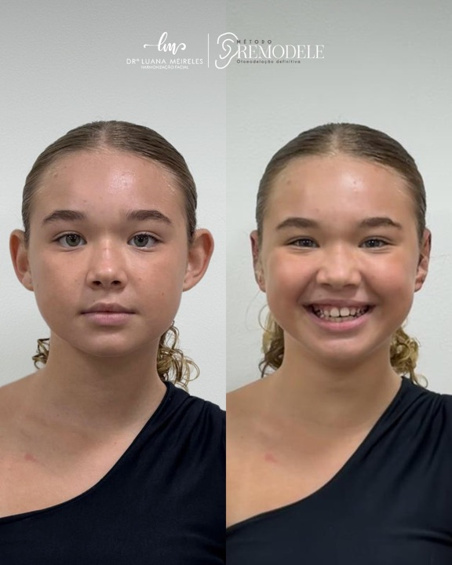
Existem inseguranças que começam cedo. Às vezes surgem na escola, nas fotos com os amigos, ou naquele momento em que prender o cabelo já não parece tão simples quanto…
Botão: Agendar ver anúncio ↗
03
Cirurgião-dentista em Belo Horizonte (CRO-MG 74292), criador do método OTO4K.
Biblioteca de anúncios ↗ Página no Facebook ↗
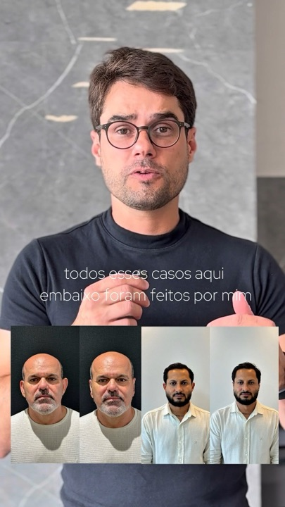
Pesquisando sobre orelha de abano? 👂 O primeiro passo para decidir com segurança é passar por uma avaliação profissional e entender qual é a melhor indicação para o seu…
Botão: WhatsApp ver anúncio ↗
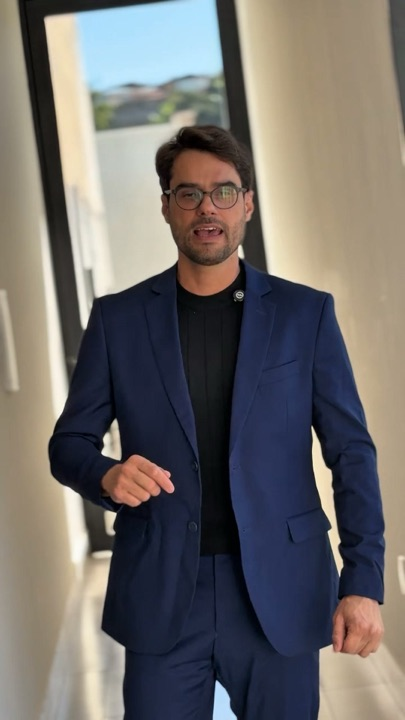
Acha que corrigir orelha de abano é caro? Pode ficar tranquilo que é muito mais acessível do que você imagina. Em apenas 40 minutos você transforma sua autoestima com…
Botão: WhatsApp ver anúncio ↗
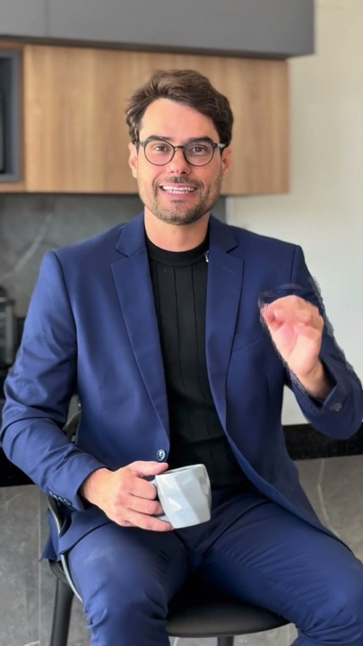
Sempre teve vergonha das suas orelhas de abano? 👂 O Dr. Uedli Aguiar (CRO-MG 74292) vai estar em Belo Horizonte nos dias 13 e 14/11 e está selecionando pacientes modelo…
Botão: WhatsApp ver anúncio ↗
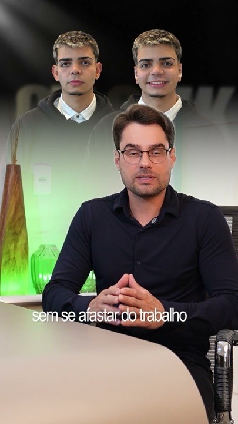
Corrija sua orelha de abano sem se afastar do trabalho. 👂 Em Belo Horizonte, o Dr. Uedli Aguiar (CRO-MG 74292), criador do método OTO4K®, atende com o método que leva…
Botão: WhatsApp ver anúncio ↗
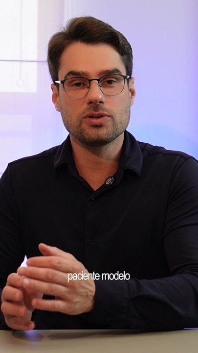
Belo Horizonte, 13 e 14 de novembro: seleção de paciente modelo de Otomodelação. 👂 Você que tem orelha de abano e vive se escondendo: o Dr. Uedli Aguiar (CRO-MG 74292)…
Botão: WhatsApp ver anúncio ↗
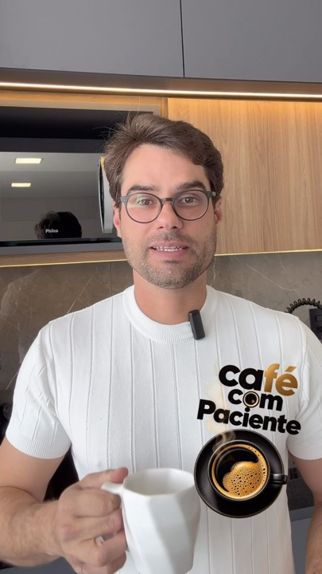
“Eu nunca achei que me incomodava até eu realmente fazer.” Estreia do Café com Paciente, quadro novo aqui no perfil. Quem abre a série é o Filipe, que adiou o…
Botão: Perfil do Instagram ver anúncio ↗
04
Harmonização em Brasília. 83 anúncios ativos, a página com mais anúncios de orelha do país.
Biblioteca de anúncios ↗ Página no Facebook ↗
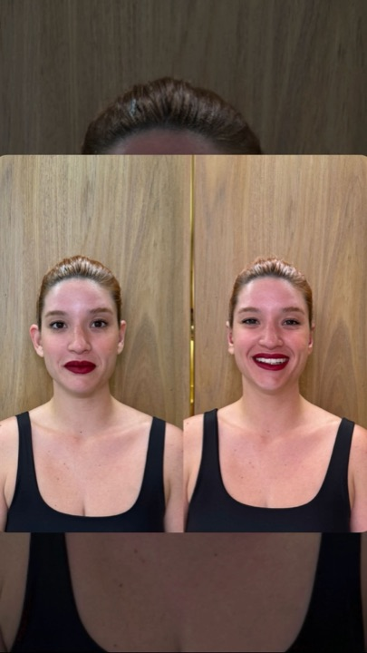
✨ Sorriso que traduz liberdade depois da Otomodelação 💖 É uma técnica minimamente invasiva, sem cortes e sem dor, com resultado imediato. Atendimento em Brasília
Botão: Perfil do Instagram ver anúncio ↗
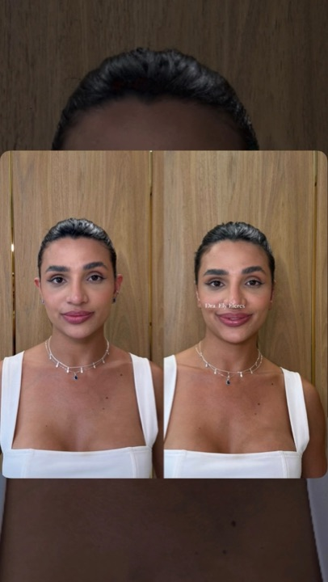
O nome disso? Otomodelação. E o sentimento? Amor-próprio ❤️ A Otomodelação Avançada corrige orelhas abertas de forma rápida, segura e sem cirurgia.
Botão: Perfil do Instagram ver anúncio ↗
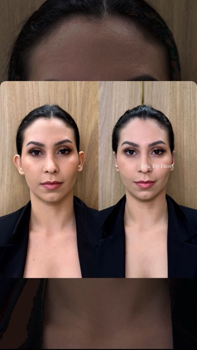
😱 De orelhas que incomodavam… a um resultado natural e harmonioso! 👂🏻A Otomodelação Avançada é um procedimento rápido, seguro e sem cortes que remodela o formato das…
Botão: Perfil do Instagram ver anúncio ↗
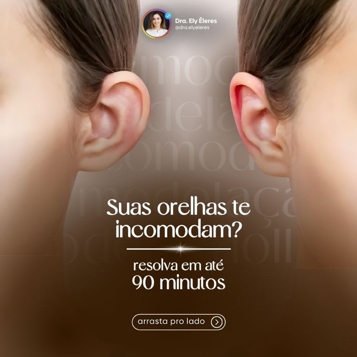
A solução para corrigir o desconforto das orelhas abertas e recuperar a sua confiança. 💫 ✨ Sem cortes ✨ Indolor Dra Ely Éleres é reconhecida como a maior referência em…
Botão: WhatsApp ver anúncio ↗
05
Otomodelação em vários estados (atende em Cáceres/MT e outras cidades). 65 anúncios, 57 em vídeo.
Biblioteca de anúncios ↗ Página no Facebook ↗
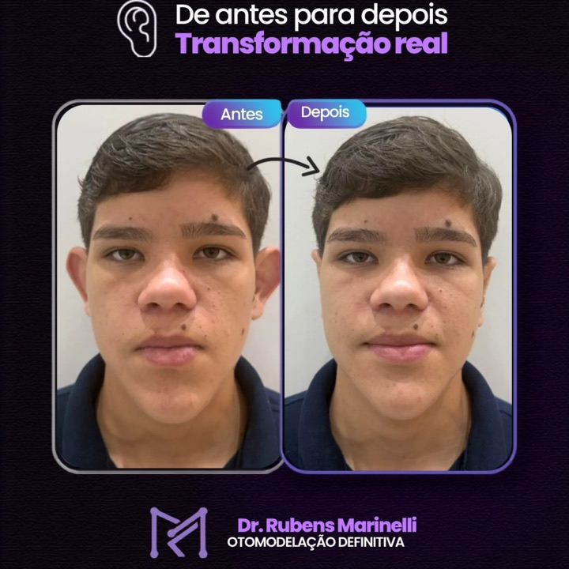
👂✨ Mais uma transformação que reforça nosso compromisso com resultados naturais e autoestima. Desta vez, um caso realizado em Cáceres - MT, mostrando que a otomodelação…
Botão: WhatsApp ver anúncio ↗
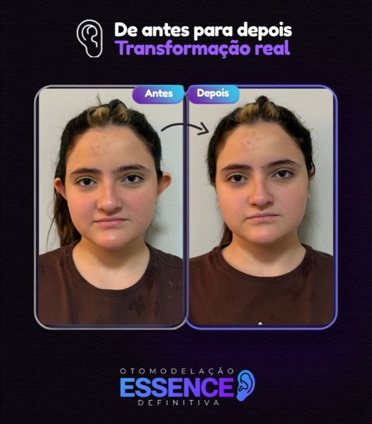
Quando o resultado fala por si! Nitidamente dá para perceber a diferença entre o antes e o depois dessa orelha. Antes, ela era bem projetada e aberta, depois da…
Botão: WhatsApp ver anúncio ↗
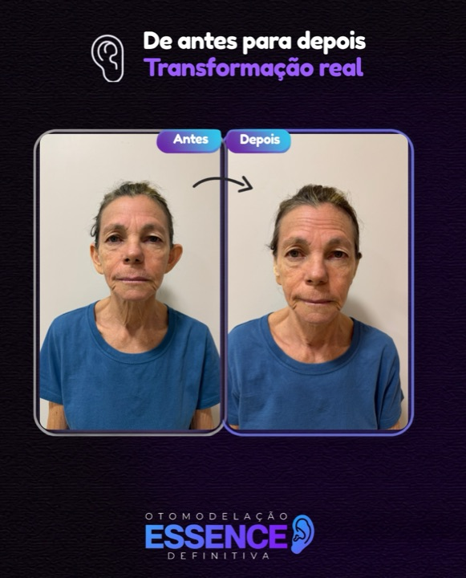
A idade é só um número! Nunca é tarde para realizar aquilo que você sempre sonhou, depois de tantos anos, decidiu realizar um sonho e fez a otomodelação definitiva. Um…
Botão: WhatsApp ver anúncio ↗
Fechamento de Orelha DEFINITIVA
Botão: WhatsApp ver anúncio ↗
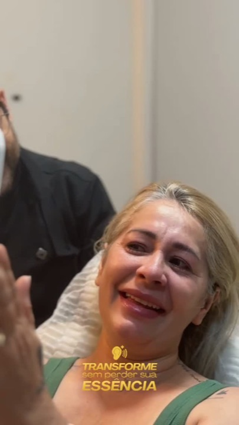
Não se trata apenas de estética, mas de devolver a autoestima, o sorriso e a confiança de se olhar no espelho e se reconhecer na sua melhor versão. Ver a emoção de uma…
Botão: WhatsApp ver anúncio ↗
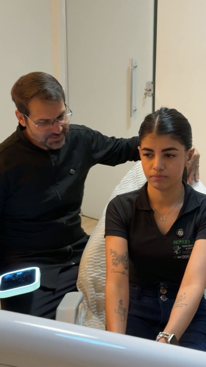
Essa é a reação de quem corrigiu a orelha de abano. Sem cirurgia. 1h30. Resultado no mesmo dia. Chama o Dr. Rubens no WhatsApp.
Botão: WhatsApp ver anúncio ↗
06
Otomodelação com fragilização de cartilagem, atende em consultório.
Biblioteca de anúncios ↗ Página no Facebook ↗
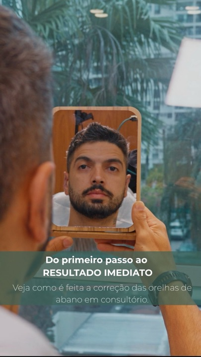
Você já teve curiosidade de saber como é feita a correção das orelhas de abano? 👂 💙Neste vídeo, você acompanha o passo a passo da otomodelação com fragilização de…
Botão: Mensagem ver anúncio ↗
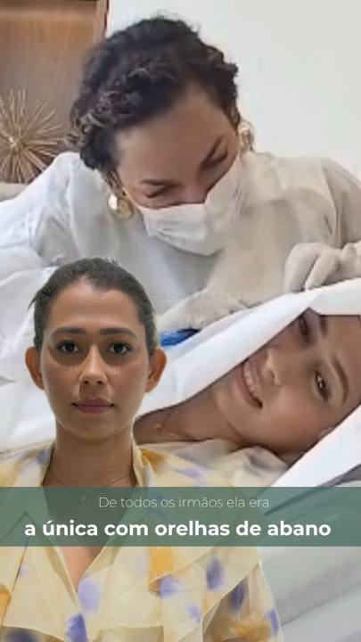
💙Ela não era diferente mas sempre se sentiu assim. 🪡De todos os irmãos, era a única com a orelha de abano. E por anos, aprendeu a esconder com cabelo, ângulos e truques…
Botão: Mensagem ver anúncio ↗
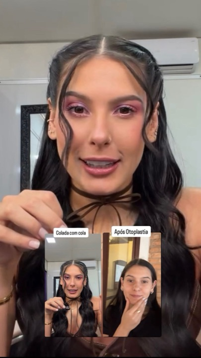
💙A Ana Castela fez a cirurgia de otoplastia e a orelha dela abriu de novo. Sabia que isso pode ser corrigido sem cirurgia? 🪡Quando a orelha volta, muita gente acha que…
Botão: Perfil do Instagram ver anúncio ↗
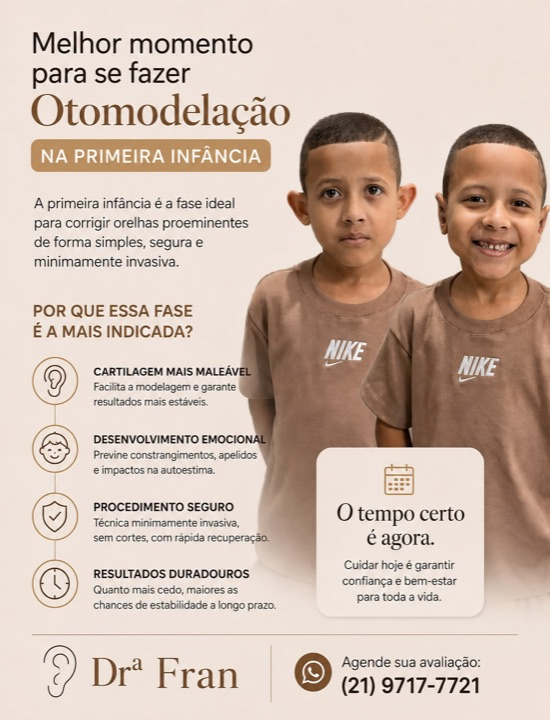
O melhor momento pode ser agora. 💛 A primeira infância é uma fase importante para avaliar a correção das orelhas proeminentes, considerando o desenvolvimento da criança…
Botão: Mensagem ver anúncio ↗
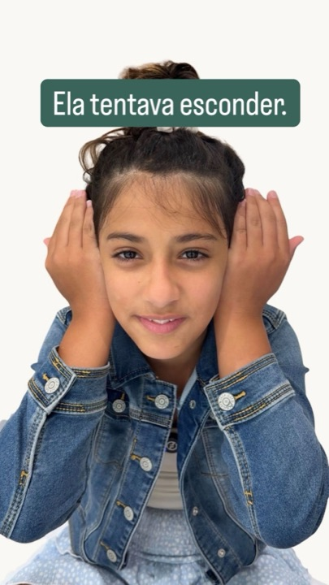
Ela tem 9 anos. 💙E por muito tempo, não prendia o cabelo na escola. Não porque não gostava de penteados mas porque não queria mostrar as orelhinhas. 🪡O que parece…
Botão: Perfil do Instagram ver anúncio ↗
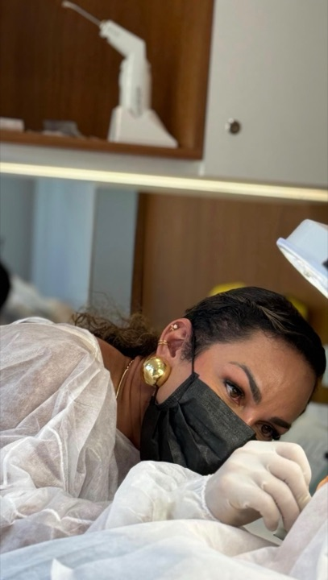
💙Orelhas de abano podem impactar a autoestima em qualquer fase da vida. Hoje já existe uma alternativa moderna, minimamente invasiva e com recuperação rápida para quem…
Botão: Mensagem ver anúncio ↗
07
Cirurgião-dentista, “Referência em Otomodelação”, método próprio CCP.
Biblioteca de anúncios ↗ Página no Facebook ↗
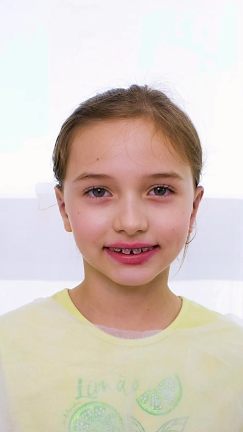
Uma pequena paciente, mas com uma coragem enorme! Aos 8 anos, ela fez o procedimento com muita coragem e, ao final, ficou ainda mais linda! O mais especial é acompanhar…
Botão: Perfil do Instagram ver anúncio ↗
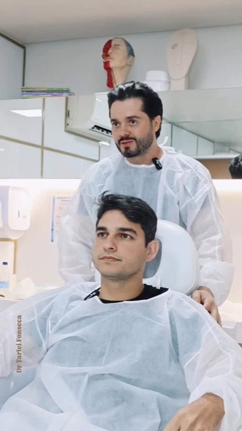
Mais um resultado incrível, obrigado pela confiança e preferência. Técnica segura e executada com excelência não tem como não ter um resultado impecável. Tem dias que…
Botão: Perfil do Instagram ver anúncio ↗
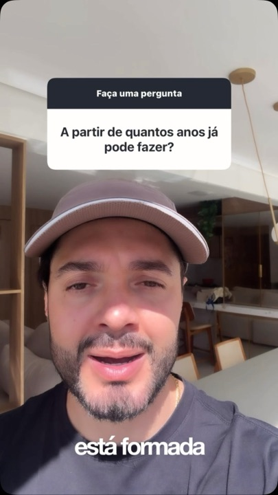
Essa é a dúvida de muita gente! A otomodelação pode ser feita a partir dos 6 anos de idade👂🏼 Nessa idade praticamente toda estrutura auricular já foi formada!
Botão: Perfil do Instagram ver anúncio ↗
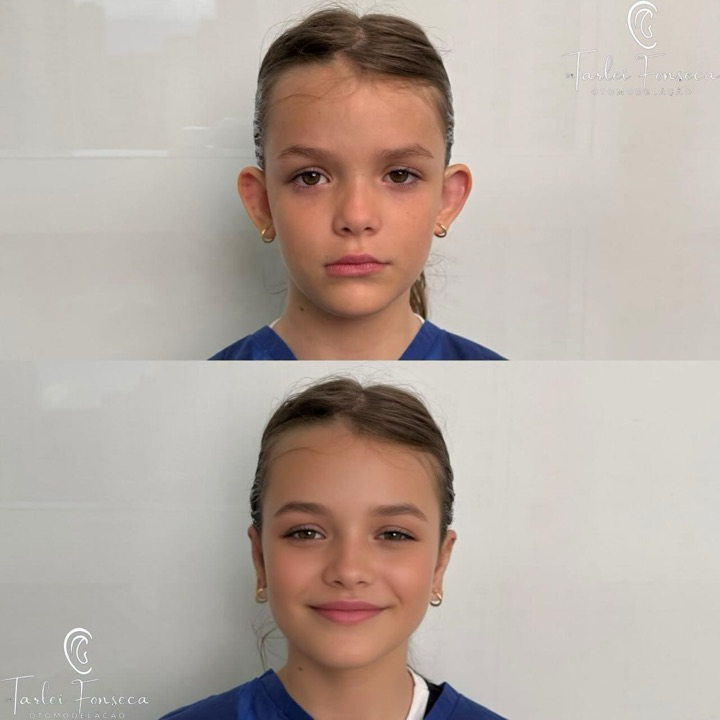
O brilho no olhar da Helena diz tudo. 👧✨ Depois de sonhar tanto com esse momento, hoje ela se vê no espelho com mais alegria, confiança e autoestima. Um resultado…
Botão: WhatsApp ver anúncio ↗
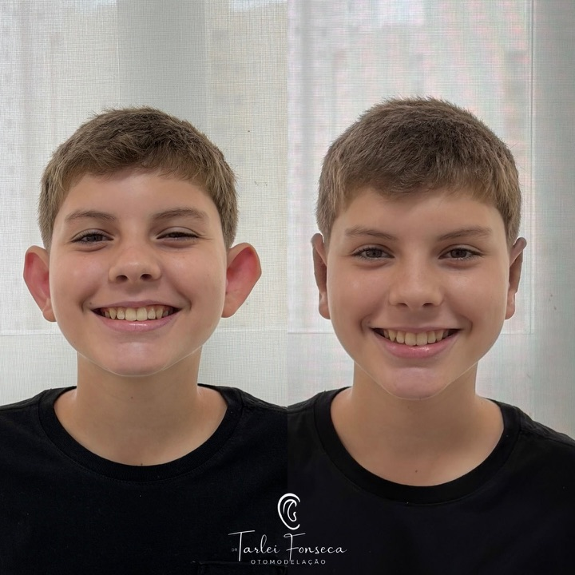
Resultados que transformam autoestima e confiança. ✨ . . . . . . ⚠️De acordo com a Lei CFO 196/2019 que autoriza a divulgação das imagens relativas ao diagnóstico e ao…
Botão: WhatsApp ver anúncio ↗
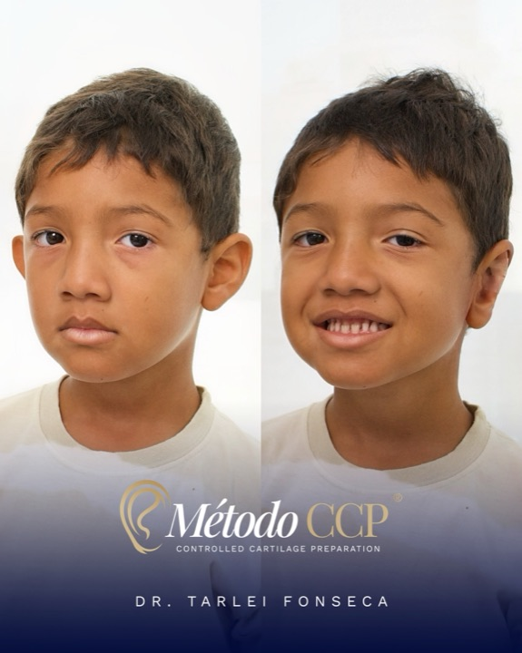
O sorriso do pequeno Eduardo já disse tudo. É sobre isso. Sobre uma criança que chega encolhida e sai de cabeça erguida, sobre mudar uma vida, realizar um sonho e deixar…
Botão: WhatsApp ver anúncio ↗
08
Clínica Face&Ear, técnica New Ear e protocolo infantil exclusivo. Só vídeo (20 de 20).
Biblioteca de anúncios ↗ Página no Facebook ↗
Um antes e depois para lá de fofo! ❤️ Nada me traz mais alegria do que poder proporcionar às crianças que passam por aqui uma transformação que promove autoestima e…
Botão: WhatsApp ver anúncio ↗
Imagine corrigir o formato das suas orelhas sem cirurgia, sem dor e com resultados duradouros! Na Face&Ear, isso é possível. A técnica New Ear®️ de otomodelação permite…
Botão: WhatsApp ver anúncio ↗
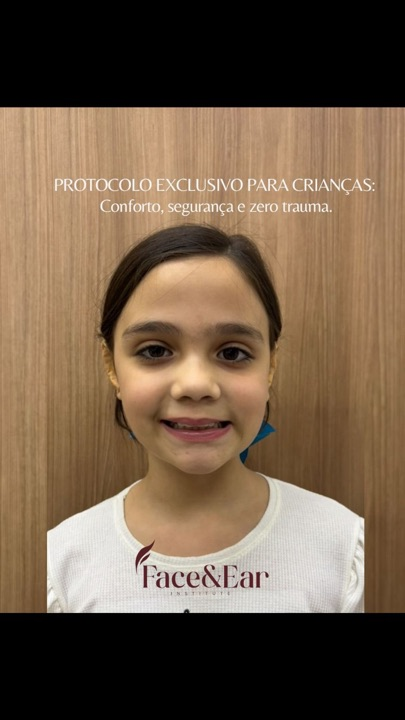
Orelhas de abano? Não precisa mais conviver com isso. Na infância, a insegurança com as orelhas pode afetar a autoestima, as amizades e até o desenvolvimento escolar.…
Botão: WhatsApp ver anúncio ↗
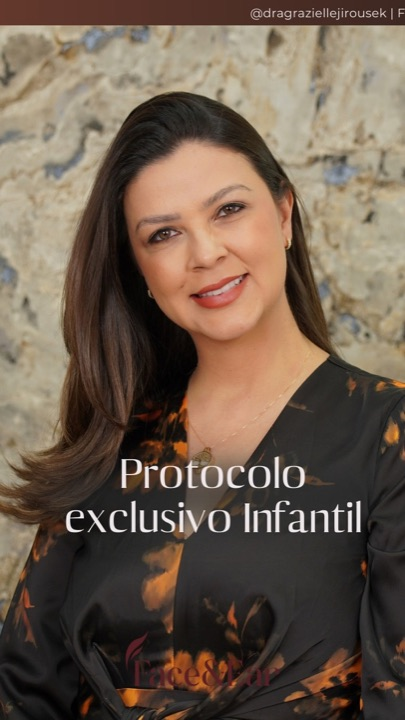
O protocolo infantil exclusivo da Dra. Grazielle foi desenvolvido justamente para corrigir orelhas de abano de forma simples, segura e sem cirurgia. Cada etapa é…
Botão: WhatsApp ver anúncio ↗
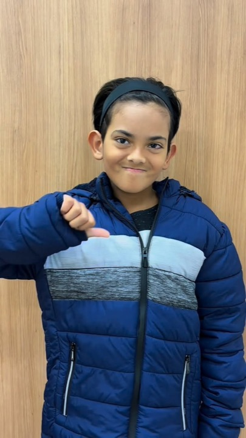
O paciente Allan de 10 anos sempre se incomodou com as suas orelhinhas abertas, vivia tímido e sempre usava o cabelo para esconder-las. Após passar por uma avaliação…
Botão: WhatsApp ver anúncio ↗
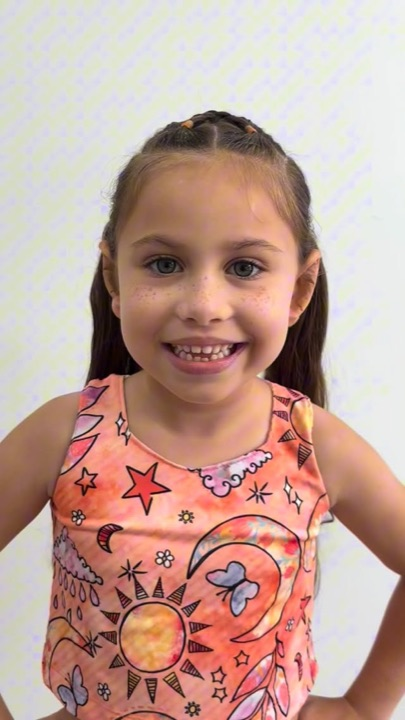
Ver o sorriso e a autoestima no rosto de um filho não tem preço. É de fato o melhor presente que uma mãe e um pai pode proporcionar a eles. New Ear Kids. O único…
Botão: WhatsApp ver anúncio ↗
09
Otomodelação com marca própria para bebês (Otobaby). 45 anúncios, 40 em imagem.
Biblioteca de anúncios ↗ Página no Facebook ↗
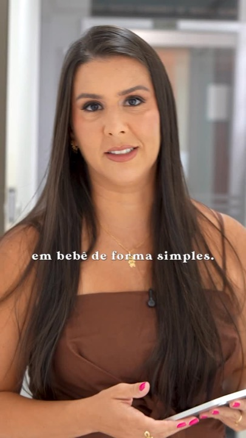
✨ Cuidar hoje é transformar o amanhã. ✨ O tratamento Otobaby foi desenvolvido para corrigir de forma delicada e não invasiva alterações na orelhinha dos bebês ainda nos…
Botão: WhatsApp ver anúncio ↗
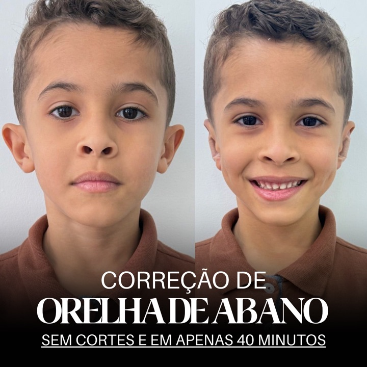
Você evita prender o cabelo ou tirar fotos de determinados ângulos por causa das suas orelhas? A otomodelação é um procedimento minimamente invasivo que pode corrigir a…
Botão: WhatsApp ver anúncio ↗
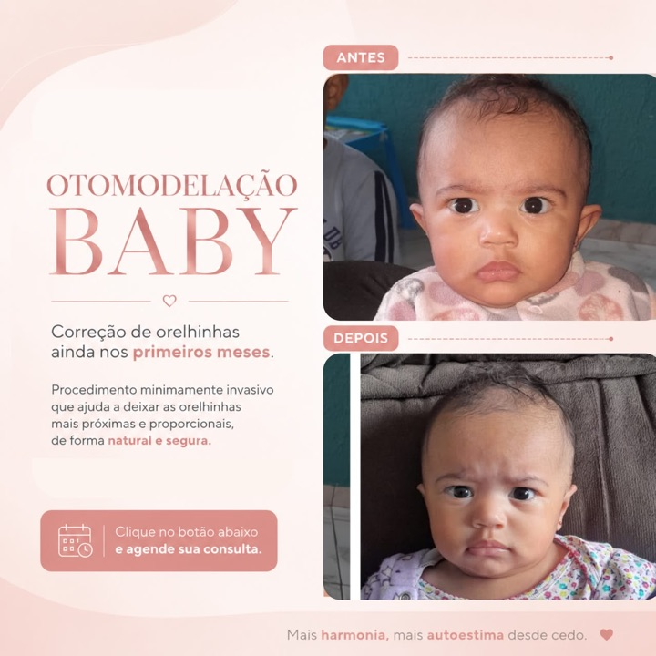
Se uma mãe tivesse te contado isso antes… talvez você faria diferente. Existe um período muito específico nos primeiros meses de vida em que a orelha do bebê pode ser…
Botão: WhatsApp ver anúncio ↗
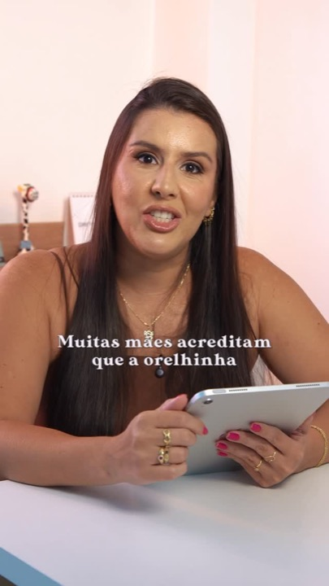
Cuidar de quem a gente mais ama também é prevenir 💛 O OTOBABY é um tratamento delicado, seguro e não cirúrgico, indicado para corrigir alterações nas orelhinhas dos…
Botão: WhatsApp ver anúncio ↗
10
Método Fragilize. Anuncia otomodelação com preço.
Biblioteca de anúncios ↗ Página no Facebook ↗
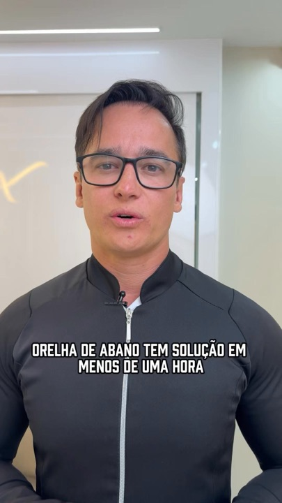
👂 Chega de esconder as orelhas no cabelo ou perder a confiança nas fotos! Com um procedimento que corrige a orelha de abano: ✨ Sem cirurgia ✨ Sem cortes ✨ Sem sofrimento…
Botão: WhatsApp ver anúncio ↗
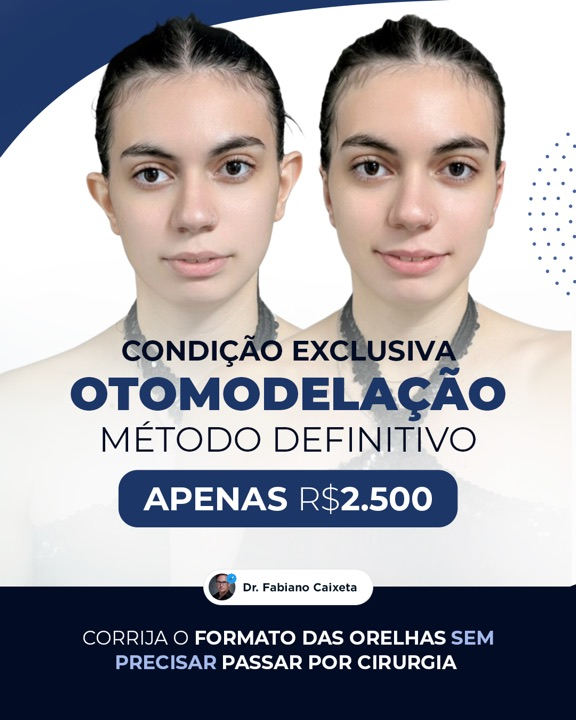
👂✨ Chegou a hora de transformar sua autoestima! Com a Otomodelação, você corrige o aspecto das orelhas de forma sem dor, sem cortes e sem cirurgia, através de um método…
Botão: WhatsApp ver anúncio ↗
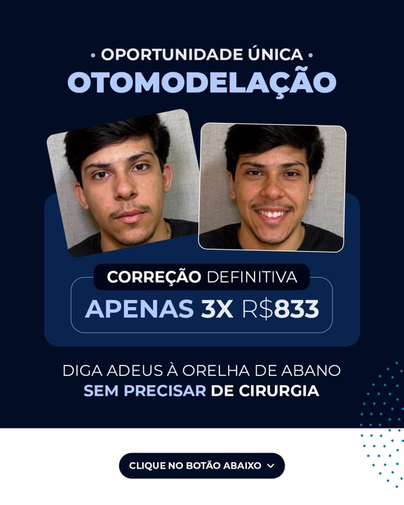
👂 Chegou a hora de dizer adeus à orelha de abano! Você não precisa passar por uma cirurgia para conquistar mais harmonia no seu rosto e recuperar sua autoestima. ✨ Com a…
Botão: WhatsApp ver anúncio ↗
Parte
7 especialistas. Os maiores nomes do lip lift no Brasil são cirurgiões-dentistas bucomaxilofaciais.
11
Cirurgiã-dentista bucomaxilofacial em São Paulo. A maior referência de lip lift do Brasil (237 mil seguidores), com método próprio.
Biblioteca de anúncios ↗ @dra.fran_souza ↗
12
Cirurgiã-dentista de HOF em Belo Horizonte, levou o lip lift para Minas.
Biblioteca de anúncios ↗ Página no Facebook ↗
Você não vai acreditar na transformação da Gretchen! E hoje quero te contar o que fizemos para valorizar ainda mais a beleza de uma das mulheres mais icônicas do Brasil!…
Botão: WhatsApp ver anúncio ↗
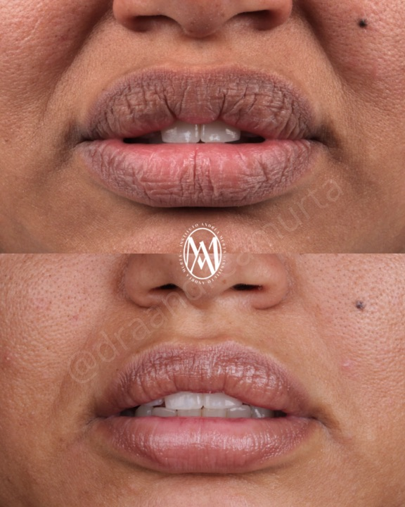
Mais um caso super interessante para vocês! Essa paciente realizou aqui no Instituto Andrea Murta a queiloplastia redutora, que é diminuir o tamanho do lábio para ficar…
Botão: WhatsApp ver anúncio ↗
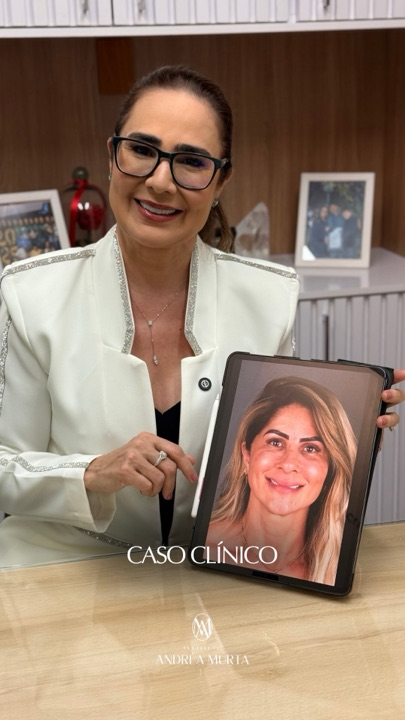
O antes e depois dessa paciente é simplesmente inacreditável! Aqui, eu conto um pouco pra vocês sobre a queixa que a paciente nos procurou e o que foi feito! Venha…
Botão: WhatsApp ver anúncio ↗
Nem todo caso é simples, mas com planejamento e previsibilidade, o resultado vem! Através da remoção do PMMA, hiperplastia (aumento do volume do lábio) e cirurgia para…
Botão: WhatsApp ver anúncio ↗
Nada funcionava... até agora. Essa é a história de uma paciente que já havia tentado de tudo: preenchimento, micropigmentação, mas nada entregava o que ela realmente…
Botão: WhatsApp ver anúncio ↗
Sutil, delicado e poderoso. ✨ O Lip Lift é aquele detalhe que muda tudo: eleva o lábio superior, valoriza o sorriso e rejuvenesce a expressão. Aqui no Instituto Andréa…
Botão: WhatsApp ver anúncio ↗
13
Cirurgia labial em Salvador (lip lift superior, inferior e corner, queiloplastia). 35 anúncios, todos para o WhatsApp.
Biblioteca de anúncios ↗ Página no Facebook ↗
✨ Queiloplastia Redutora ✨ Muitas pessoas se incomodam com lábios finos… mas também atendo vários pacientes que sentem o oposto: desejam reduzir o excesso de volume…
Botão: WhatsApp ver anúncio ↗
Confere aqui esse caso lindo e super natural de LIP LIFT TOTAL (Superior/Inferior/Corner) - No video com 21 dias de Pós operatório 💕✨ Foi APENAS realizada a cirurgia e…
Botão: WhatsApp ver anúncio ↗
💡Para ver este caso detalhado, entre nos destaques “Queiloplastia” 👩🏻⚕️A paciente apresentava lábio duplo e se queixava do excesso de flacidez no lábio superior,…
Botão: WhatsApp ver anúncio ↗
✨ TOTAL LIP LIFT ✨ O envelhecimento da região perioral não acontece apenas no lábio superior. Com o passar dos anos, observamos alongamento do filtro labial, perda de…
Botão: WhatsApp ver anúncio ↗
Vem entender o processo de cicatrização pós LIP LIFT! E acompanhar esse resultado comigo 🧚🏻♀️✨ Na próxima postagem trago as fotos dessa maravilhosa! 💕
Botão: WhatsApp ver anúncio ↗
Do lado esquerdo, a anatomia natural. Do lado direito, o resultado após o Lip Lift. Ao reduzir o filtro labial, o lábio ganha exposição, definição e harmonia — sem…
Botão: WhatsApp ver anúncio ↗
14
Cirurgiã bucomaxilofacial com ênfase em estética da face.
Biblioteca de anúncios ↗ Página no Facebook ↗
Agende sua avaliação 44988391010 Lip Lift superior e inferior ✨ Um procedimento pensado para devolver proporção e definição aos lábios, suavizando as rugas ao redor da…
Botão: WhatsApp ver anúncio ↗
Atenção, São Bernardo do Campo e região ✨ A Dra. Vivianni Gil vai atender em São Bernardo do Campo em parceria com a Dra. Alecsandra dos Santos Ferreira…
Botão: Saiba mais ver anúncio ↗
15
Lip lift. Os anúncios atuais são de seleção de paciente modelo.
Biblioteca de anúncios ↗ Página no Facebook ↗
Estamos selecionando paciente modelo para Lip Lifting. Uma oportunidade para realizar o procedimento com condição especial, acompanhamento profissional e foco em um…
Botão: WhatsApp ver anúncio ↗
Nem toda mudança na aparência dos lábios depende de mais volume. Em alguns casos, a distância entre o nariz e o lábio superior pode influenciar bastante a proporção e a…
Botão: WhatsApp ver anúncio ↗
Paciente modelo de Lip Lift! 😍 Estamos selecionando paciente modelo. 📱 Agende sua avaliação pelo WhatsApp!
Botão: WhatsApp ver anúncio ↗
16
Cirurgião-dentista, rejuvenescimento labial e terço inferior.
Biblioteca de anúncios ↗ Página no Facebook ↗
17
Clínica de cirurgia facial com a Dra. Bianca Torres.
Biblioteca de anúncios ↗ Página no Facebook ↗
Os perfis que são referência em cada procedimento. Abra e marque 👍 ou 👎 no jeito de comunicar.
Dr. Kleyton Valverde · Dentista · BH · 209 mil
Criador da técnica. Gancho fixo e “2 anos depois” do mesmo paciente.
Dra. Luana Meireles · Dentista · SP · 242 mil
Método Remodele, antes e depois e depoimento. Mostra atendimentos fora do país.
Dra. Sâmea Maciel · Dentista · São José dos Campos · 25 mil
Fala em “harmonização de orelhas”, com naturalidade. Não fala em cirurgia.
Dra. Daniela Oliveira · Tatuapé/SP · 15 mil
Bio em 1ª pessoa: “Corrijo suas orelhas de abano sem cirurgia”.
Dra. Thaís Olímpia · Sorocaba/SP · 9 mil
Prova social local e clínica com nome próprio.
Instituto Método Auris · 6 mil
Antes e depois de várias idades e de homens.
Dra. Fran Souza · Dentista bucomaxilo · SP · 237 mil
A maior referência. Acompanha cada paciente por meses e corrige lip lift malfeito.
Dr. Charles Roza · Dentista bucomaxilo · SP · 103 mil
“+1.500 lip lifts”: usa o volume de casos como autoridade.
Dr. Ricardo Camargo · Bucomaxilo · Av. Paulista · 34 mil
Lip lift já no nome do perfil. Faz também mento e cirurgia facial.
Dr. Fabio Barros · Dentista bucomaxilo · RJ e SP
HOF completa. O lip lift entra como cirurgia minimamente invasiva.
Dr. Alexandre Jácome · Bucomaxilo · Natal · 13 mil
Destaque “Lip Lift”, com ângulo de rejuvenescimento.
Páginas boas de texto, para quando o Dr. Giácomo tiver a página dele de orelha e de lábio.
O melhor modelo de página: separa o público por dor (cabelo preso, bullying, medo de cirurgia, pais) e tem FAQ completo.
Página local de dentista (“Otomodelação em Contagem”) com CRO visível. Modelo para “Otomodelação em Balneário Camboriú”.
Página de dentista: quem é candidato (lábio longo, mostra pouco dente), cicatriz na base do nariz, CRO no rodapé.
O conteúdo mais completo: o que é, quanto o lábio sobe (de 14 para cerca de 11 mm), tempo de cirurgia e a diferença para o preenchimento.
Dentista em Florianópolis: é o concorrente mais perto em lip lift. Fala com 40+ e com jovem de sorriso baixo.
Página local (“Lip lift em Curitiba”) com cicatriz “em área de sombra” e comparação com o preenchimento.
Cada uma vira uma caixinha ou um vídeo curto do Dr. Giácomo.
A Camila é paciente: grava antes por que a orelha incomoda (o rabo de cavalo), o dia do procedimento, 7 dias e 30 dias. Gancho: “Eu trabalho com o Dr. Giácomo e decidi fazer a minha.” É a série mais verdadeira que dá para ter. Precisa do termo de autorização de imagem.
Gancho da cola (a Luana tem esse anúncio no ar há 567 dias): “Você cola a orelha com cola antes de uma festa? Tem cantora famosa que faz isso antes de todo show.” Depois, o Dr. explica a otomodelação em 30 segundos. Sem citar o nome da cantora.
O Dr. mostra o consultório e explica o passo a passo em linguagem simples: anestesia local, sem corte, faixa por alguns dias, volta ao trabalho. Responde “é cirurgia?” e “vou precisar me afastar?”.
Selfie curta respondendo a dúvida mais comum das mães (a partir dos 6 anos). Depois: “Dói?” e “A orelha pode voltar?”. As caixinhas foram o formato mais barato na conta dele.
Gravar o primeiro olhar no espelho de cada paciente (com autorização). Sem roteiro, só a reação. Vira anúncio com uma frase na tela.
“Ela não prendia o cabelo na escola.” História curta de criança, contada pela mãe. Só com autorização assinada dos responsáveis.
O Dr. mostra um lip lift de perfil e diz: “Não tem preenchimento aqui. O lábio não ganhou volume, ganhou altura.” Explica a diferença em 30 segundos.
Fala com quem está cansada do preenchimento: por que, em alguns casos, mais volume não resolve e o que o lip lift muda.
Mostrar sem medo o que todas perguntam: o dia, 7 dias, 21 dias e 60 dias da cicatriz na base do nariz. Transparência é o que mais vende lip lift.
No mesmo formato do vídeo de papada 5569: “Sorria no espelho. Você mostra pouco dente? O seu lábio de cima ficou mais comprido com os anos?” Ajuda a pessoa a se reconhecer como candidata.
Gravar a marcação no rosto, em close, com o Dr. explicando as medidas. Mostra cuidado e individualidade, sem precisar mostrar o procedimento.